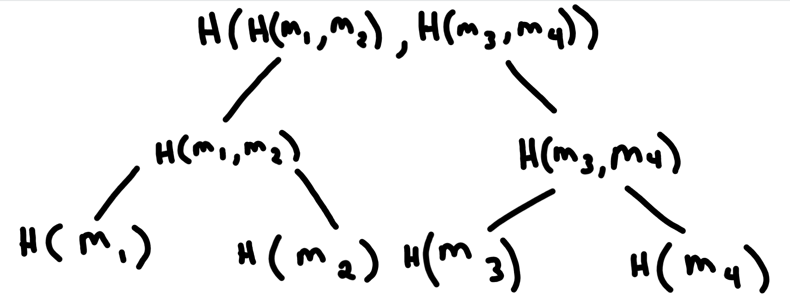

Introduction
In the world of cryptography and blockchain technology, Merkle trees are a crucial data structure that plays a significant role in ensuring data integrity and security. Named after Ralph Merkle, who first proposed the concept in 1979, Merkle trees have become an essential building block for various applications, including cryptocurrencies, distributed file systems, and more. In this blog post, we will delve into the concept of Merkle trees, their properties, and their applications in modern computing.
What is a Merkle Tree?
A Merkle tree, also known as a hash tree, is a hierarchical data structure that represents a large dataset in a compact and verifiable way. It is constructed using hash functions, which are mathematical algorithms that take input data and produce a fixed-size string of characters, known as the hash value or hash digest. Merkle trees are binary trees, meaning that each node in the tree has at most two child nodes.
How Does a Merkle Tree Work?
Let’s understand the construction of a Merkle tree with a simple example. Consider a dataset with four elements: \(m_1, m_2, m_3, m_4\). To create a Merkle tree from this dataset, the following steps are followed:
Hashing the Data: Each data element in the dataset is hashed individually. For our example, we apply a hash function (e.g., SHA-256) to get the hash values: \(h(m_1), h(m_2), h(m_3), h(m_4)\).
Pairwise Hashing: The hash values are then paired together, and each pair is concatenated and hashed again. In case the number of elements is odd, the last hash value is duplicated to form a pair. Continuing with our example, we get the intermediate hash values: \(h(h(m_1)+h(m_2)), h(h(m_3)+h(m_4))\).
Root Hash: The process of pairwise hashing continues until a single hash value remains. This final hash value, often called the root hash or the Merkle root, represents the entire dataset. In our example, we obtain the root hash: \(h(h(h(m_1)+h(m_2)) + h(h(m_3)+h(m_4)))\).
The resulting Merkle tree would look like this:

Properties of Merkle Trees
Merkle trees offer several important properties that make them valuable in cryptographic applications:
Data Integrity: Any change in the original dataset would result in a completely different Merkle root, making it easy to detect alterations or tampering.
Efficiency: Merkle trees allow for efficient verification of data integrity. Users can compare only a small portion of the tree (logarithmic in size) to ensure the authenticity of the entire dataset.
Parallelism: The structure of Merkle trees allows for parallel computation, making them suitable for distributed systems.
Compactness: Even for large datasets, Merkle trees require minimal space to store the root hash.
Applications of Merkle Trees
Merkle trees find extensive use in various fields, including:
Blockchain Technology: In blockchain systems like Bitcoin, Merkle trees are used to summarize transactions within a block, forming the block’s Merkle root. This root is stored in the blockchain’s header, ensuring the integrity of all transactions within the block.
Peer-to-Peer Networks: In distributed file systems and peer-to-peer networks, Merkle trees are used to verify the integrity of data chunks during file transfers.
Certificate Revocation: Merkle trees facilitate efficient certificate revocation in Public Key Infrastructures (PKI) by maintaining a compact and updatable list of revoked certificates.
Conclusion
Merkle trees are a fundamental data structure in cryptography that enables efficient and secure data verification. Their role in ensuring data integrity and tamper resistance has made them a vital component in various technologies, including blockchain and distributed systems. By understanding the principles behind Merkle trees, we can appreciate the significance of this elegant and versatile data structure in modern computing.